Introduction
Près de 93% de l’ensemble du trafic internet provient des moteurs de recherche. On estime que Google reçoit 80 000 requêtes par seconde, soit 6,9 milliards de requêtes par jour. (Source: Blog du modérateur). Au niveau mondial, si Google détient près de 91% des parts de marché, depuis quelques années, de nouvelles solutions alternatives essaient de perturber ce quasi-monopole de la recherche internet.
Quels sont les impacts de nos activités sur les applications web ou mobile de moteurs de recherche ? Quelles sont les solutions les plus/moins impactantes pour l’environnement, l’encombrement des réseaux et l’autonomie de nos smartphones ? Quels sont les paramètres qui peuvent faire varier cet impact et comment nous, consommateurs, pouvons mieux limiter notre impact carbone et environnemental ?
Pour cette étude, nous avons choisi de mesurer 8 applications de moteurs de recherche parmi les plus populaires en France sur les versions web et mobile sur Android : Bing, DuckDuckGo, Ecosia, Google, Lilo, Qwant, StartPage et Yahoo.
Sommaire de l’article :
- Comparaison d’une recherche d’un site web vs URL
- Comparaison entre les moteurs d’une recherche locale
- Comparaison entre les moteurs d’une recherche ciblée
- Comparaison entre les moteurs d’une recherche basique suivant plusieurs critères
(auto-complétion, thème sombre, fil d’actualité) - Comparaison entre les moteurs d’une recherche via un navigateur web
- Nos conseils pour une recherche « eco-responsable » sur mobile
- Méthodologie
Disclaimer : nous mesurons uniquement l’activité du device utilisateur, ses entrées/sorties et projetons les impacts réseau et serveur sur la base d’une méthodologie moyenne d’impact (voir partie méthodologie). Nous savons que certains moteurs font appel à des serveurs sobres en énergie, un refroidissement optimisé, de l’électricité « verte »… Que d’autres protègent mieux votre vie privée ou encore financent des associations et causes importantes… Nous n’avons pas eu accès au data center de nos examinés et nous avons donc pris des hypothèses basées sur des projections d’activités basées sur la volumétrie échangée. Néanmoins comme il s’agit d’un sujet qui possède un impact économique direct, nous imaginons que ces sociétés ont conçu des systèmes optimisés pour que l’achat des machines et leur exploitation ne leur coûte pas trop cher !
Quel impact carbone pour une recherche d’un site web vs URL ?
Pour cette première comparaison, deux scénarios sont ici réalisés : d’un côté nous lançons une recherche du mot-clé « Fnac » et de l’autre nous lançons une recherche par URL « Fnac.com », nous permettant d’accéder directement au site, sans passer par les résultats de recherche. Seules deux applications ne proposent pas d’accès URL direct : StartPage et Yahoo. StartPage n’apparaît pas dans ce classement en raison d’un défaut d’affichage du site Fnac.
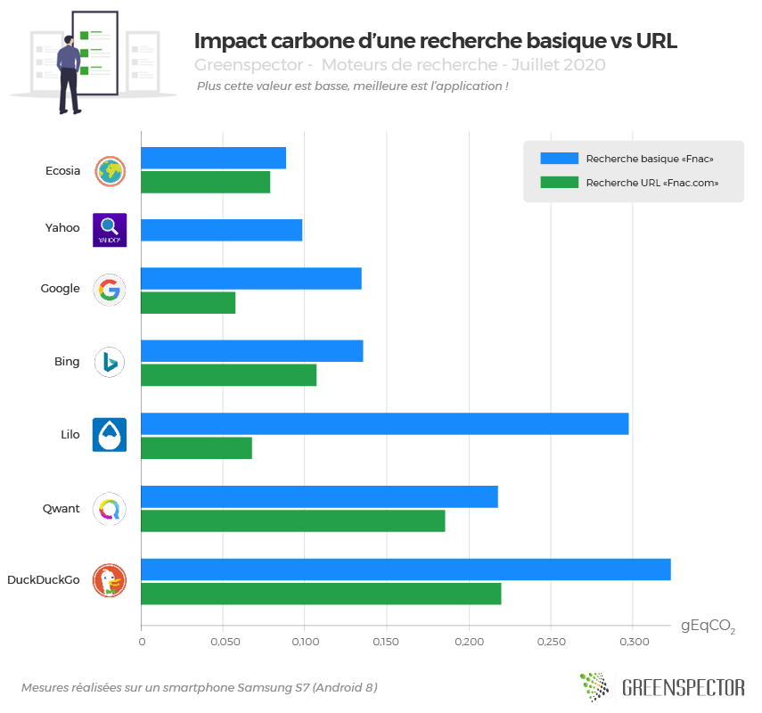
Ce n’est pas une surprise et c’est toujours mieux de le mesurer, nous observons qu’une recherche par URL consomme beaucoup moins sur l’ensemble des applications de moteurs de recherche mesurées. En moyenne, on remarque une réduction de 35% de l’impact carbone. Privilégiez donc une recherche par URL (si vous la connaissez !) sans passer par la page des résultats de recherche afin d’économiser en énergie et en données !
Pour cette première comparaison, nous conseillons d’utiliser Ecosia qui est le moteur ici le plus efficient toutes recherches confondues (0,167 gEqCO2) avec un écart type de 0,377 gEqCO2 avec le moins sobre du classement DuckDuckGo (0.5433 gEqCO2). La seconde place est attribuée à Google (0,192 gEqCO2) qui consomme 13% de plus qu’Ecosia.
Ces résultats sont néanmoins très disparates entre les différentes solutions puisque si sur Ecosia les 2 types de recherche ont quasiment le même impact, il est 2,3 fois plus important pour Google et 4,4 fois plus pour Lilo par exemple.
Sur une recherche basique, il vous en coûtera un impact batterie 50% supérieur avec DuckDuckGo et 6 fois plus de données reçues qu’avec Ecosia. Néanmoins, nous remarquons que la consommation de mémoire utilisée par Ecosia est 1,5 fois plus important sur le smartphone de l’utilisateur dans ce scénario que la moyenne des autres moteurs. Sur ce même parcours, on peut noter également que la consommation d’énergie la plus faible pour vos batterie est celle de Qwant (à égalité avec Ecosia) due à un parcours plus rapide. Ici efficience et performance du scénario utilisateur vont de pair. A noter également que pour le moteur le plus utilisé sur la planète, Google est aussi celui qui a le plus d’impact d’autonomie sur la recherche basique, soit 28% de plus que la moyenne des autres moteurs. Mention spéciale pour Yahoo qui arrive à concilier un impact faible et la moins forte consommation de mémoire (non prise en compte dans le calcul de l’impact Carbone).
Sur une recherche par URL, l’impact carbone de DuckDuckGo est 2,2 fois supérieur à la moyenne des autres moteurs et quasiment 4 fois plus important que Google le plus vertueux sur ce scénario. Ceci s’explique par une faible consommation d’énergie sur le device utlisateur mais surtout avec une consommation de données 7,3 fois moins importante que la moyenne des moteurs et quasiment 15 fois moins importante que DuckDuckGo ! Petite consolation pour DuckDuckGo, il est aussi le moins consommateur de mémoire sur le device utilisateur avec 50% de moins que la moyenne des moteurs et jusqu’à 93% de moins qu’Ecosia le plus gourmand en mémoire de ce scénario à nouveau.
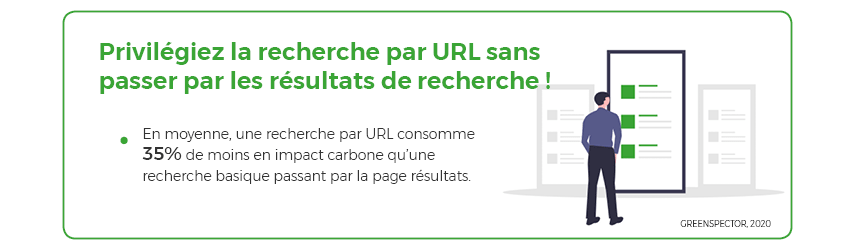
Recherche locale, l’impact carbone d’une carte interactive
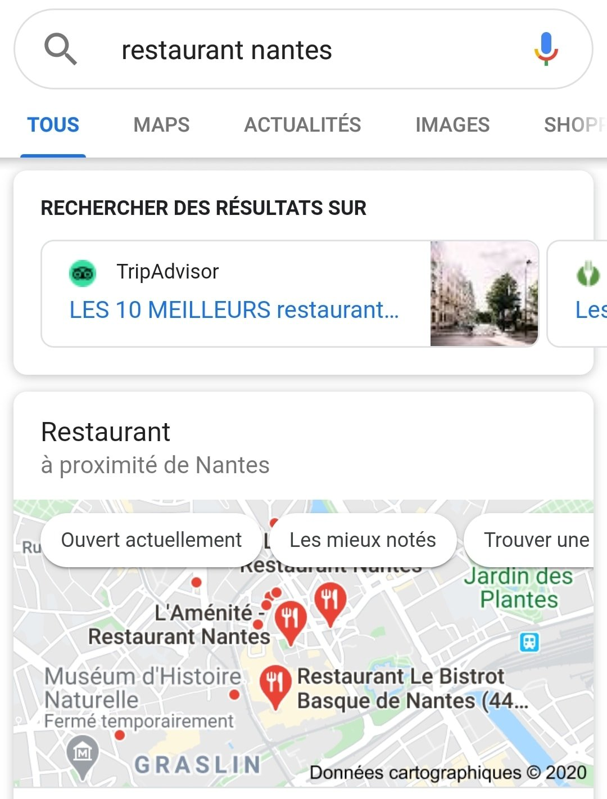
Pour ce scénario, nous lançons une recherche locale aussi appelée « de proximité ». Les mots-clés « Restaurant Nantes » sont recherchés, la plupart des moteurs affichent alors une carte interactive avec une sélection de restaurants.
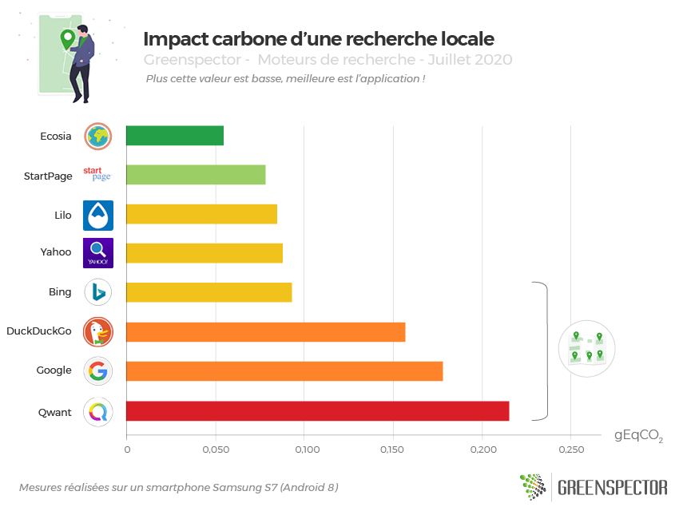
Pour cette recherche locale, quatre applications se démarquent en n’affichant pas de carte interactive sur la page de résultats : Ecosia, StartPage, Lilo (affichage d’une liste Pages Jaunes) et Yahoo. Bien que moins pratique pour découvrir en un coup d’œil les suggestions, on remarque que ces applications sont moins « carbonivores« . On peut donc en conclure et sans surprise que l’affichage d’une représentation cartographique de présentation nuit à l’impact environnemental.
Si on prend les moyennes des applications qui n’affichent pas de carte (0,076 gEqCO2) à celles qui en affichent une (0,161 gEqCO2) : on obtient une différence d’impact carbone de 52%. Peut-être que ces solutions pourraient proposer un affichage cartographique en 2 étapes et l’afficher uniquement la carte détaillée sur demande de l’utilisateur ?
Sur ce classement, Ecosia est également en tête (0,055 gEqCO2) suivi de près par StartPage (0,078 gEqCO2). Les moins bons élèves sont Google (0,178 gEqCO2) et Qwant (intégration d’une carte PagesJaunes, 0,216 gEqCO2).
L’écart d’impact carbone entre la meilleure et moins bonne application est de 74%. Toutefois et à nouveau Ecosia est aussi celle qui consomme le plus de mémoire sur le device utilisateur, 50% de plus que la moyenne des moteurs pour une recherche locale. Au final, seul StartPage arrive à allier un faible impact carbone et une moindre consommation de ressources mémoire.
Pour expliciter ces écarts, on peut citer l’impact data 10 fois supérieur pour Qwant par rapport à Ecosia et 2,7 fois supérieur par rapport à la moyenne des autres moteurs. Sur la partie énergie, les écarts mesurés sont moins importants, Google et Yahoo sont les pires ennemis de votre batterie et d’impact carbone sur le device utilisateur avec 28% en moyenne de consommation en plus par rapport à la moyenne des autres moteurs.
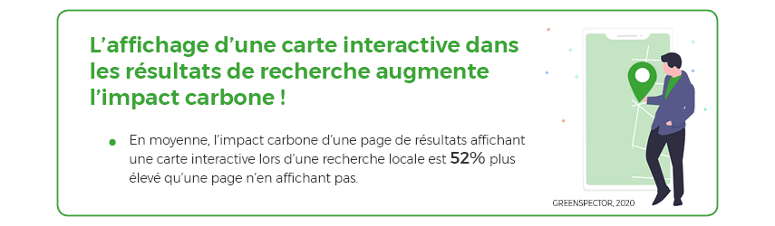
Recherche ciblée, l’impact carbone d’un widget météo
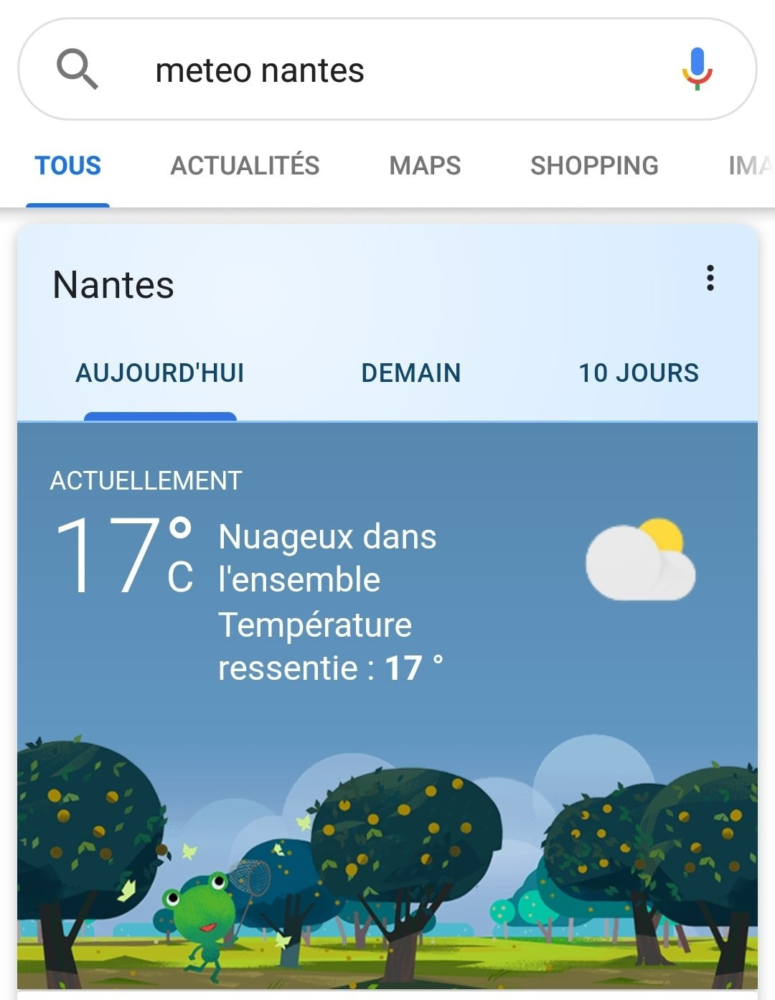
Pour ce scénario, nous lançons une recherche ciblée des mots-clés « Météo Nantes ». Tous les moteurs fonctionnent avec un widget météo. Seuls les moteurs Lilo et Qwant n’en affichent pas et ne permettant pas une vue directe sur la météo actuelle. Cependant Qwant affiche en partenariat avec Pages Jaunes, l’organisme de météorologie le plus proche, faussant les résultats.
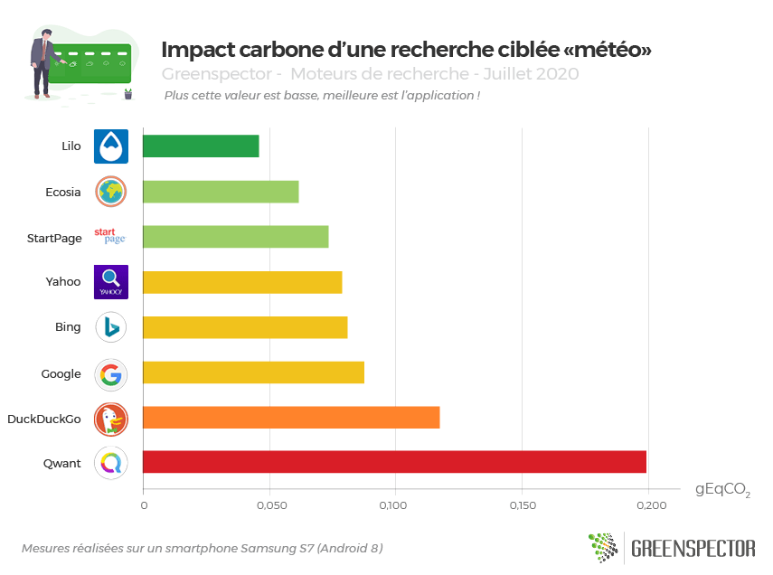
On remarque pour cette comparaison de recherche ciblée sur la météo, que l’application Lilo (0,045 gEqCO2) qui n’affiche pas de widget météo, est en tête du classement. Suivie par Ecosia (0,062 gEqCO2), l’application la plus sobre de celles qui affichent un widget météo. Entre Lilo et Ecosia, la différence d’impact carbone s’élève à 26%.
Si l’on compare Lilo à la moyenne des applications affichant le widget météo (0,083 gEqCO2), la différence d’impact carbone s’élève alors à 45%.
Le moteur le plus impactant avec le widget météo est DuckDuckGo (0,118 gEqCO2) soit 1,9 fois plus que Ecosia.
Pour Qwant (0,199 gEqCO2), la recherche n’est pas concluante puisque le moteur n’affiche pas de widget mais la station de météorologie la plus proche sous forme de représentation business et cartographique Pages Jaunes. Cette pratique est clairement plus consommatrice / impactante, 2,5 fois plus impactante que la moyenne des autres moteurs, et 4 fois plus impactant que le moteur Lilo.
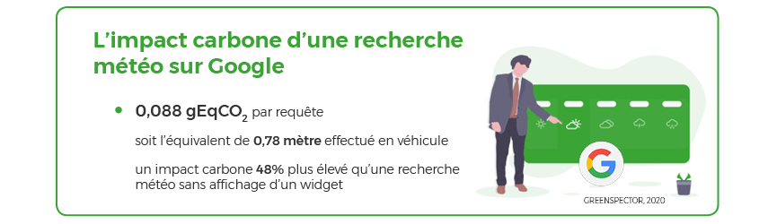
Côté facteurs explicatifs, Lilo consomme peu d’énergie sur le device utilisateur et peu de données. Sur cet indicateur, il consomme plus de 4 fois moins de données que la moyenne des moteurs et jusqu’à 11 fois moins que Qwant !
Sur la partie Empreinte mémoire et consommation de batterie utilisateur, pour la recherche ciblée, c’est à nouveau StartPage le plus sobre avec 47% de moins que la moyenne de consommation d’énergie des autres moteurs mais aussi 44% de moins de mémoire que la moyenne. Yahoo, Qwant et Google sont aussi les plus énergivores avec une consommation moyenne supérieure avec 13% de plus que les autres moteurs. Côté mémoire, c’est à nouveau Ecosia qui sur-consomme avec 50% de plus que la moyenne de ses concurrents et quasiment 2 fois plus que DuckDuckGo !
Recherche basique d’une définition
Dans cette partie, nous analysons différentes façons d’aborder une recherche basique d’une définition. Nous avons choisi LA définition la plus recherchée sur Google en 2019 en France, celle du mot « Procrastination ». Par ailleurs, afin de vous économiser une recherche, nous vous en donnons dès maintenant la signification : Procrastination (nom féminin) « tendance à ajourner, à remettre systématiquement au lendemain« . Nous vérifierons dans une prochaine étude les grandes tendances de recherche de 2020 !
Recherche d’une définition, quel impact environnemental ?
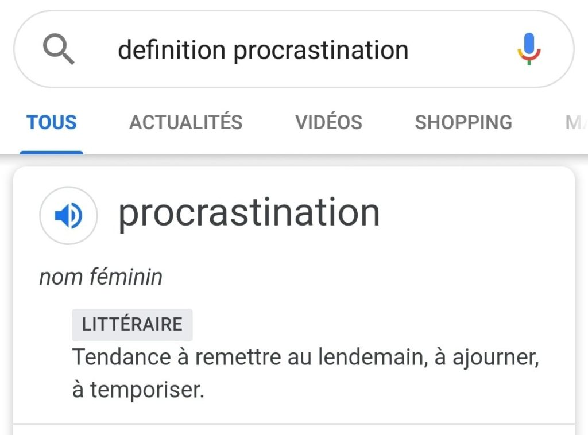
Ce scénario nous servira de base pour les prochains, nous lançons une recherche des mots-clés « définition procrastination ».
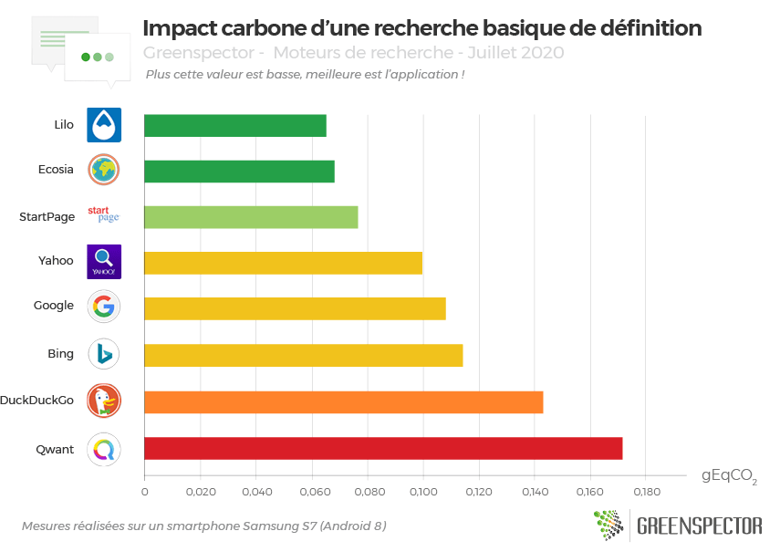
Pour une simple recherche, notre top 3 côté impact carbone est constitué de : Lilo (0,065 gEqCO2), Ecosia (0,068 gEqCO2) et StartPage (0,076 gEqCO2). Qwant est désavantagé par sa trop forte consommation de données, il est plus économe en énergie consommée sur le device, puisque second côté consommation d’énergie.
StartPage, en plus de posséder un faible impact est également moins « ressourcivore » en mémoire que les autres moteurs et 2 fois moins qu’Ecosia notamment sur ce use case. StartPage est également le moins énergivore et 2 fois moins que Yahoo sur le même scénario de recherche.
Qwant est à nouveau dernier de ce classement en terme d’impact carbone car trop dispendieux en données, presque 3 fois plus que la moyenne des autres moteurs et jusqu’à 6 fois plus qu’Ecosia.
Sur cette même recherche basique et sur la base de la moyenne d’impacts des 8 moteurs, la part de l’impact lié au réseau et au mobile sont prépondérants et à part égale par rapport à la part d’impact sur le serveur qui reste faible.
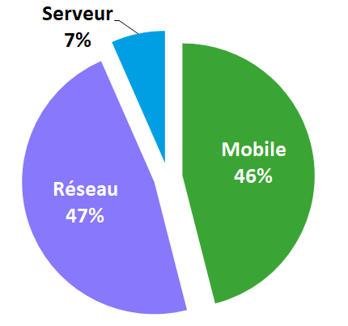
Cette projection doit cependant faire l’objet d’une analyse plus profonde en posant des sondes dans les datacenters notamment.
En moyenne, l’impact carbone tous moteurs de recherche confondus est de 0,106 gEqCO2. Celui de Google, le moteur le plus utilisé au monde, est de 0,108 gEqCO2 soit l’équivalent en impact carbone d’un mètre (0,96m) effectué en véhicule léger.
Si l’on projette sur la base des statistiques d’utilisation de Google, voici quelques chiffres intéressants :
L’impact carbone des 80 000 requêtes effectuées en 1 seconde (si toutes ces requêtes étaient des requêtes basiques lancé depuis un smartphone de moyenne gamme) dans le monde est de : 8 660 gEqCO2 soit l’équivalent de 77 km effectués en véhicule léger. L’impact carbone d’un jour de requêtes Google est un équivalent carbone de 6,7 millions de km en véhicule léger.
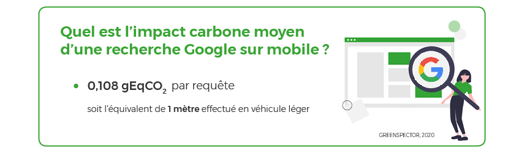
Recherche d’une définition avec auto-complétion
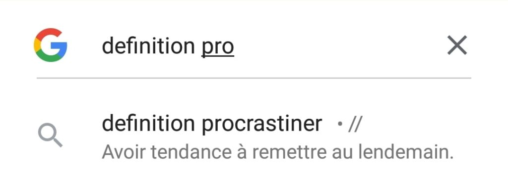
Pour ce scénario d’auto-complétion ou de « suggestion », nous lançons une recherche des mots-clés « définition pro », le moteur nous affiche alors une suggestion « définition procrastination » nous cliquons sur cette proposition. Pour évaluer ce scénario, nous avons du activer un paramètre qui nous permettait de désactiver le mode auto-complétion sur les différents moteurs, seuls 2 moteurs le permettent et sont donc ici comparés sur ce scénario.
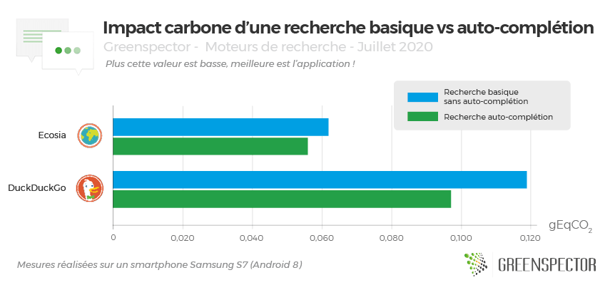
Seules deux applications de moteurs de recherche permettent de supprimer complètement les suggestions ou auto-complétion (Ecosia et DuckDuckGo). On remarque que pour Ecosia pour une consommation d’énergie équivalente, une recherche basique sans suggestions, la consommation de données échangées est réduite de 11% par rapport à une recherche proposant des suggestions. Côté DuckDuckGo, une recherche sans suggestions permet de réduire de 22% la consommation d’énergie et 14% le volume de données échangées.
On observe en moyenne qu’une recherche utilisant l’auto-complétion permet de réduire de 14% l’impact carbone.
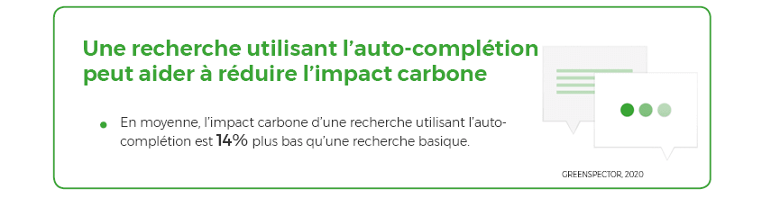
Recherche d’une définition avec un thème sombre
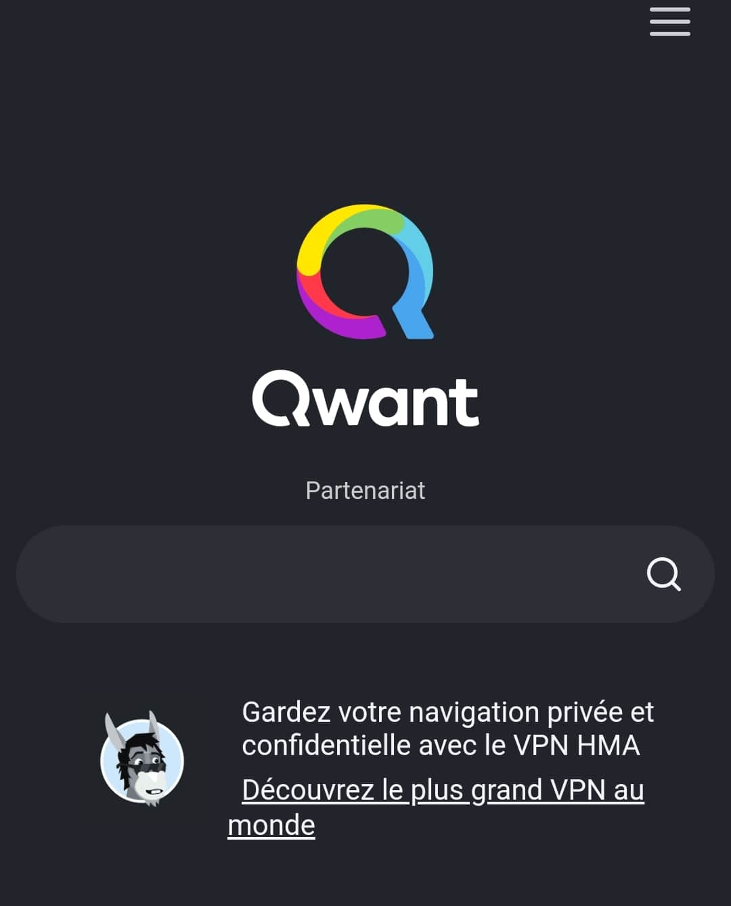
Pour ce scénario, nous activons le thème sombre depuis les paramètres des deux seules applications le proposant : DuckDuckGo et Qwant et lançons la même recherche de définition du mot procrastination.
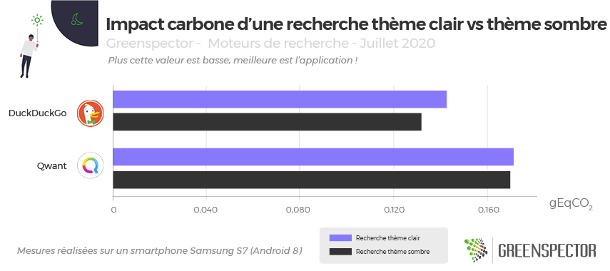
Pour ces deux applications proposant le thème sombre sur mobile, en moyenne le thème sombre permet de réduire l’impact carbone de 3%. Et un peu plus optimisé pour DuckDuckGo que pour Qwant avec un gain de 8% sur le thème par défaut.
Recherche d’une définition avec fil d’actualité actif
Pour ce scénario, nous activons le fil d’actualité ou « newsfeed » présent sur la page d’accueil de certaines applications et comparons avec la version désactivable sans newsfeed.
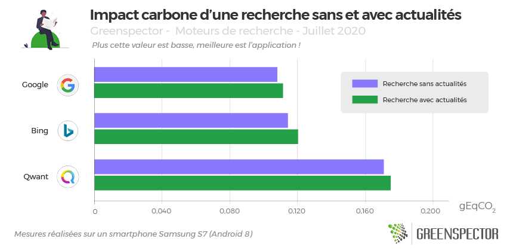
3 applications permettent l’activation et la désactivation du fil d’actualité présent sur la page d’accueil : Google, Bing et Qwant. Celui-ci a pour effet d’augmenter de seulement 3% en moyenne l’impact carbone de ces trois applications avec en moyenne une augmentation de la donnée de 4% sur ces 3 moteurs et une légère augmentation de la consommation d’énergie en local (1%)
Quel impact carbone pour une recherche via un navigateur web ?
Pour ce scénario, nous lançons le navigateur web Chrome (version 83.0.4103.106), le moteur de recherche mesuré est préalablement défini comme étant celui par défaut. La recherche de définition est toujours celle du mot procrastination.
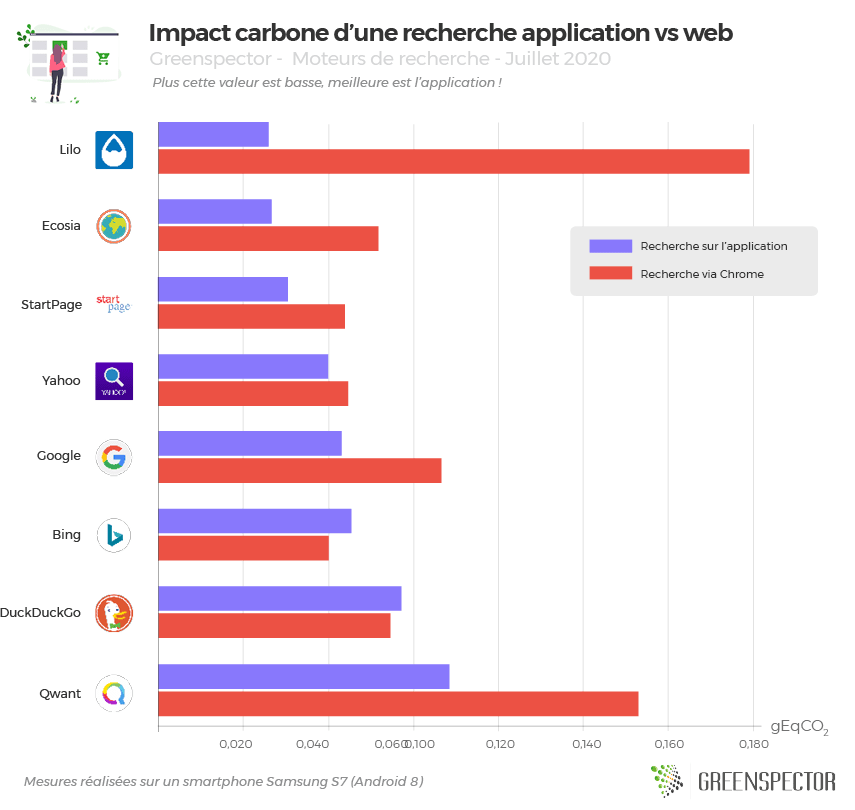
Nous avons choisi de comparer une recherche via l’application et une recherche via un navigateur. Pour cette mesure, nous avons choisi le navigateur Chrome, l’un des plus utilisés. Vous pouvez par ailleurs découvrir notre article sur les meilleurs navigateurs à utiliser en 2020 où nous avons comparé les principaux du marché. Pour deux des applications mesurées : DuckDuckGo et Bing, la recherche via Chrome est moins impactante en moyenne de 8%. Pour les autres applications, pour lesquelles la navigation sur Chrome est plus impactante, il s’agit d’un écart en moyenne de 116% mais qui va jusqu’à multiplier l’impact par 5,3 pour Lilo. Au global et en moyenne, la recherche via un navigateur sur tous ces moteurs est 64% plus impactante que par l’application mobile.
Pour l’ensemble de ces moteurs,
- la consommation d’énergie est stable et légèrement inférieure en web de 2% mais avec de grandes disparités : + 48% pour StartPage et moins 28% pour Yahoo.
- La consommation de data est en forte progression pour la recherche Web avec un volume qui double (+119 %). Il existe de fort contraste néanmoins : quand Bing consomme 12 % de moins (le seul moins « datavore »), d’autres consomment davantage avec un pic pour Lilo notamment (13 fois plus) et Ecosia (4 fois plus). Google reste dans la moyenne de 2 fois plus de données en Web.
- La consommation de mémoire en local augmente également sensiblement pour une recherche Web mobile versus recherche application mobile avec +48%. Là encore de fort contraste avec Ecosia dernier sur ce critère pour l’application mobile et premier sur ce critère recherche web avec une diminution de 2%. Pour tous les autres, c’est une augmentation forte avec notamment pour DuckDuckGo (+115%) et StartPage (107%).
- A noter que les temps de parcours ont diminué de 6% expliquant partiellement une plus faible consommation énergétique en recherche web.
Nos conseils pour une utilisation éco-responsable
Quand on observe l’impact environnemental d’une recherche, il est difficile de donner avec certitude les meilleurs conseils, un lien sauvegardé dans vos favoris pour aller directement sur la bonne information, le bon contenu sera toujours moins impactant que de lancer une nouvelle recherche. Nous n’avons pas testé d’autres domaines connexes que sont la sécurité/ l’utilisation de vos données ou l’accessibilité des solutions, Voici quelques informations néanmoins que nous pourrions synthétiser :
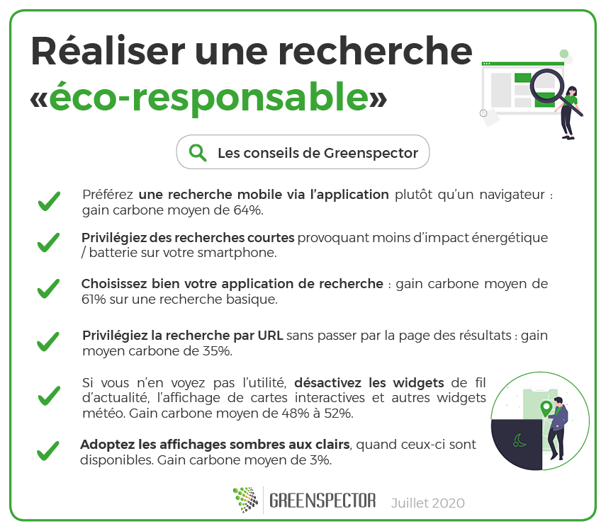
- Un procédé de recherche moins long occasionne moins d’impact énergétique/batterie sur le smartphone de votre utilisateur et peut contribuer à réduire l’impact carbone global sur toute la chaîne.
- Les impacts carbone de nos recherches sont principalement répartis entre la partie réseau et la partie mobile de l’utilisateur à part égale.
- Une recherche est plus impactante via un navigateur mobile qu’avec une application sur mobile (64% de gain carbone en moyenne).
- Pour les moteurs les moins impactants en terme carbone, optez pour StartPage ou Ecosia même si ce dernier est très consommateur de mémoire, un point à corriger.
- Pour économiser votre batterie et votre forfait data, privilégier StartPage.
- Si vous rencontrez des problèmes de mémoire sur un smartphone plus ancien, privilégiez DuckDuckGo.
- Si vous n’en voyez pas l’utilité, désactivez les widgets de fil d’actualité, l’affichage de carte interactives et autres widgets météo. Gain carbone moyen de 48% à 52%.
- Adoptez les affichages sombres aux clairs, quand ceux-ci sont disponibles. Gain carbone moyen de 3%.
Quant à Google qui domine le marché, il est dans la moyenne de l’empreinte Carbone mais est aussi celui qui en moyenne consomme le plus de mémoire (40% de plus que les autres moteurs sur l’ensemble de ces usages). Retenons en équivalence qu’une requête google en moyenne, c’est équivalent à l’impact carbone d’un parcours de 1 mètre véhicule léger moyen.
Méthodologie
Pour chacune de ses applications, mesurées sur un smartphone S7 (Android 8), le scénario utilisateur a été réalisé au travers de notre GREENSPECTOR Test Runner, permettant la réalisation de tests automatisés.
Chaque mesure est la moyenne de 4 mesures homogènes (avec un écart-type faible). Les consommations mesurées sur le smartphone donné selon un réseau de type wifi peuvent être différentes sur un PC portable avec un réseau filaire par exemple.
Pour évaluer les impacts des infrastructures (datacenter, réseau) dans les calculs de projection carbone, nous nous sommes appuyés sur la méthodologie OneByte basée sur des données réelles mesurées du volume de données échangées. Cette méthodologie d’évaluation tient compte de la consommation de ressources et d’énergie en usage pour les équipements sollicités. Comme c’est une approche très macroscopique, elle est soumise à une incertitude et pourrait être affinée pour s’adapter à un contexte, à un outil donné. Pour la projection Carbone, nous avons pris l’hypothèse d’une projection 50% via un réseau wifi et 50% via un réseau mobile.
Pour évaluer les impacts du mobile dans les calculs de projections carbone, nous mesurons sur device réel la consommation d’énergie du scénario utilisateur et afin d’intégrer la quote-part d’impact matériel, nous nous appuyons sur le taux d’usure théorique généré par le scénario utilisateur sur la batterie, première pièce d’usure d’un smartphone. 500 cycles de charges et de décharges complètes occasionnent donc dans notre modèle un changement de smartphone. Cette méthodologie et mode de calcul ont été validés par le cabinet de conseil spécialiste de l’éco-conception Evea.
| Moteurs de recherche | Version | Poids (Mo) depuis Samsung S7 | Note Playstore au 21/07/2020 | Téléchargements | Parts de marché (France) |
| Bing | 11.3.28207302 | 92,8 | 4,5 | 5 000 000+ | 3,83% |
| DuckDuckGo | 5.55.1 | 34,1 | 4,7 | 10 000 000+ | 0,86% |
| Ecosia | 3.8.1 | 137 | 4,6 | 5 000 000+ | 1,11% |
| 11.10.11.21 | 418 | 4,3 | 5 000 000 000+ | 91,68% | |
| Lilo | 1.0.22 | 86,7 | 4,3 | 100 000+ | N/C |
| Qwant | 3.5.0 | 179 | 4,0 | 1 000 000+ | 0,79% |
| StartPage | 2.1.5 | 7 | 4,4 | 500 000+ | N/C |
| Yahoo | 5.10.5 | 111 | 4,3 | 1 000 000+ | 1,32 % |